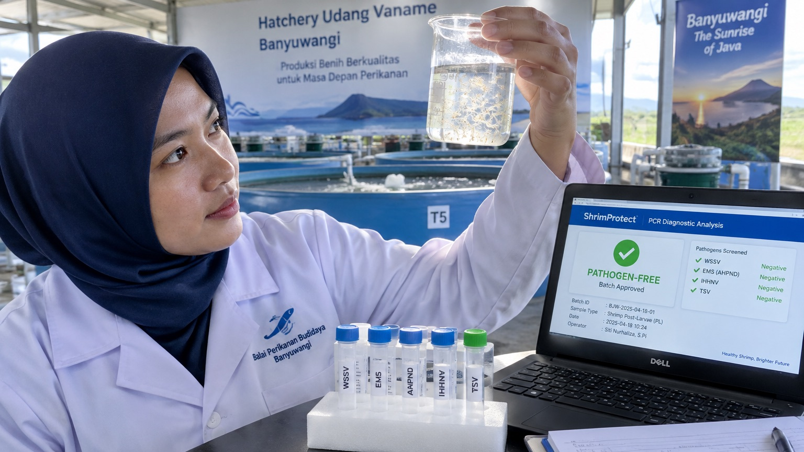
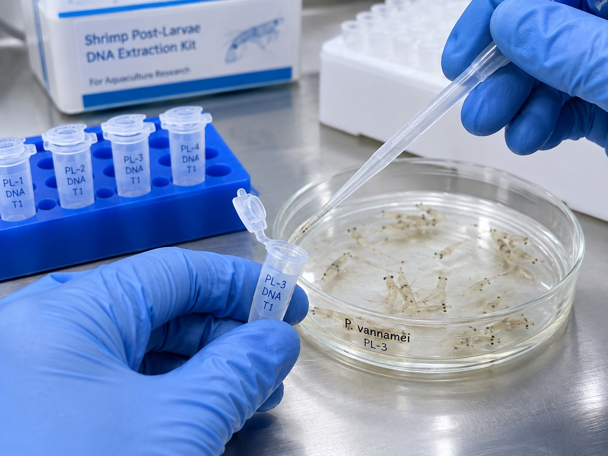
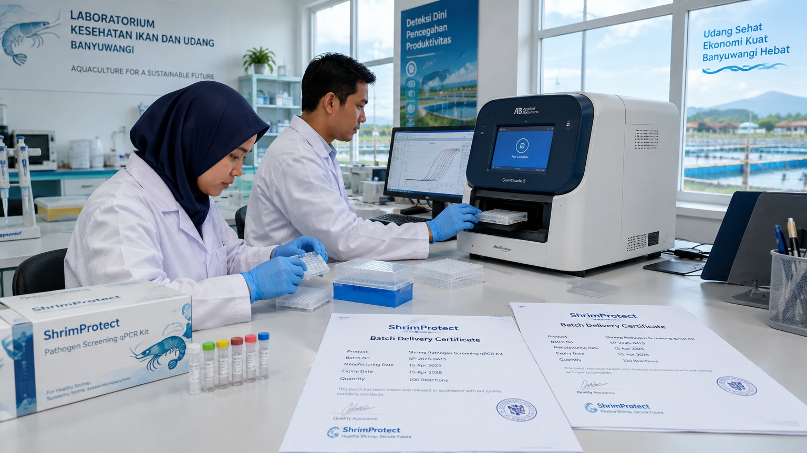
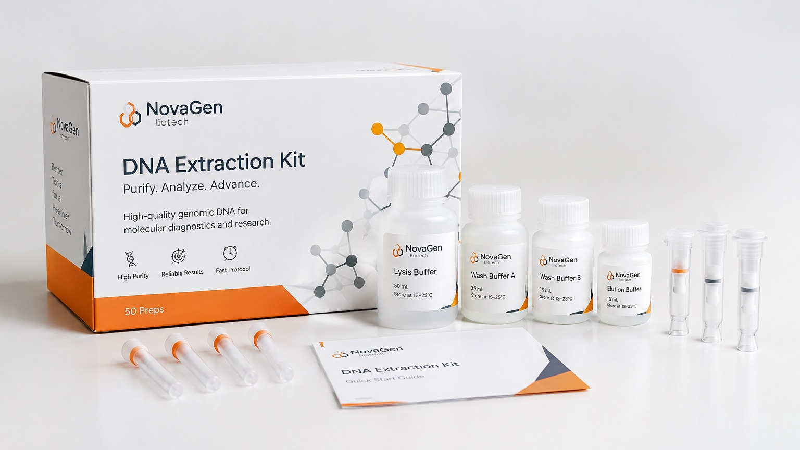

A farm laboratory used ShrimProtect X-Kit and single-target qPCR kits to check a suspected outbreak the same morning, instead of waiting days for samples to travel.
East Java, Indonesia • November 23, 2026
ShrimProtect
X-Kit V2.0

On a shrimp farm in East Java, one pond showed unusual mortality overnight. The on-site lab extracted nucleic acid and ran two ShrimProtect kits before lunch.
Hours matter when a pond turns
If a virus is behind the losses, a slow answer means more ponds exposed and harvest decisions made blind. Sending samples to an outside laboratory meant waiting days.
The farm had a small lab with a thermal cycler, a real-time PCR instrument and one technician, and wanted that setup to be enough.
The farm runs about twenty ponds and has one lab technician, trained in basic PCR. In an outbreak the questions arrive faster than the answers: which virus is it, how far has it spread, and should ponds be harvested early?
What the lab needed
Extraction that works on gill and pleopod tissue and handles both DNA and RNA
Kits for WSSV and IMNV that run on the instrument already in the lab
A run time short enough to give the owner an answer the same morning
A workflow one technician can run without outside help
“We could tell the owner something real by noon, not ‘we will know in three days’.”
[Name], Farm Laboratory Technician
A morning in the farm lab
1
06:00
Mortality noticed
One pond shows unusual mortality overnight. Gill and pleopod samples are collected.
2
08:00
Nucleic acid extracted
ShrimProtect X-Kit V2.0 purifies DNA and RNA from the samples. 30–40 minutes for up to 9 samples.
3
09:30
Two runs, one instrument
WSSV (under 35 minutes) and IMNV (under 45 minutes) run on the same real-time PCR instrument.
4
12:00
A decision with the owner
Results are reviewed with the farm owner and a plan is agreed for the affected pond.
One extraction, two kinds of target
X-Kit V2.0 purifies both DNA and RNA, so the same extract can feed a DNA target such as WSSV and an RNA target such as IMNV. RNA kits need the reverse-transcription enzyme added fresh to the SuperMix.

Figure: extraction and plate setup in the farm lab. Illustrative image.
Watch the workflow
See how a pond sample goes from gill tissue to a qPCR result in about two hours.

Video placeholder. Illustrative only.
Extraction first, then two runs
The technician grinds a small piece of gill or pleopod tissue and extracts with the X-Kit. Lysis is a short incubation at 56 °C, followed by binding, washing and elution in 50 to 100 µL. For nine samples, the whole extraction takes 30 to 40 minutes.
The same eluate feeds both kits. The WSSV run finishes in under 35 minutes. For IMNV the technician adds the reverse-transcription enzyme fresh to the SuperMix, and the qRT-PCR takes under 45 minutes.
Reading the results with the owner
Each kit includes a shrimp internal control in the Cy5 channel. A negative result therefore tells the owner that the reaction worked and the sample was good, not just that nothing was found.
In this case WSSV was detected in the affected pond and IMNV was negative. The owner and the technician agreed on the spot to isolate the pond and sample the neighbouring ponds the next day.
Outcome
An answer the same morning instead of three days later
One extraction used for a DNA target and an RNA target
Neighbouring ponds sampled the next day, again with same-day results
A written routine any technician on the farm can follow
The farm now keeps ShrimProtect kits in stock and runs a short screening round every two weeks, so a suspicious pond is part of a routine rather than an emergency.
What is next
The farm plans to add TSV and YHV to its panel, since both are RNA viruses that use the same extraction and the same qRT-PCR workflow, and to share results with neighbouring farms on the same water source.
Products used in this story
Listed in workflow order. Each card says what the product did in this story.

ShrimProtect X-Kit V2.0
Extracted DNA and RNA from gill and pleopod samples.
Tell us about your samples and the question you want to answer. A Nusantics specialist will reply within two working days with a suggested workflow and timeline.